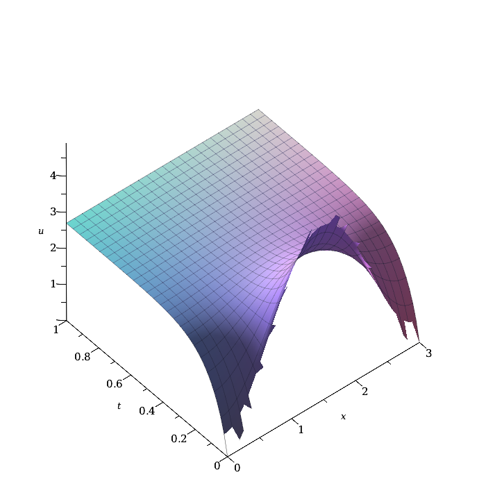
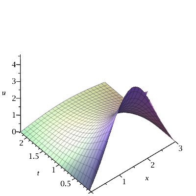
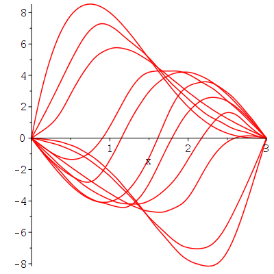
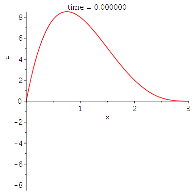

Le lecteur ne doit pas s'attende à une introduction complète aux équations différentielles partielles (EDP) dans ce document. Nous présentons seulement quelques EDP standards que les étudiants voient dans un premier cours sur les EDP.
Nous supposons que \(u(x,t)\) est la température au temps \(t\) à la position \(x\) le long de la tige. L'équation de la chaleur pour une mince tige de longueur \(L\) est
\[ \frac{\partial}{\partial t} u(x,t) = k^2 \frac{\partial^2}{\partial x^2} u(x,t) \]avec la condition initiale \(u(x,0) = f(x)\) et les conditions aux limites \(u_x(0,t) = u_x(L,t) = 0\). Les extrémités de la tige sont isolées. Il n'y a pas de perte de chaleur aux extrémités de la tige. La constante \(\displaystyle k^2\) est la conductivité thermique dans la tige. Pour que l'équation de la chaleur soit valide, nous devons assumer que les côté latéraux de la tige sont isolés.
La méthode classique pour résoudre cette EDP fait appel à la séparation des variables. Nous supposons que la solution de l'équation de la chaleur est de la forme \(u(x,t) = X(x) T(t)\). Si nous substituons cette expression dans l'équation de la chaleur, alors nous obtenons
\[ X(x) T'(t) = k^2 X''(x) T(t) \]Si nous divisons les deux côtés par \(X(x)T(t)\), alors nous obtenons
\[ \frac{T'(t)}{T(t)} = k^2 \frac{X''(x)}{X(x)} \]Le côté gauche est une fonction de \(t\) seulement et le côté droit est une fonction de \(x\) seulement. Pour que les deux côtés soient égaux, ils doivent être égaux à une constante que nous appelons \(\lambda\).
\[ \frac{T'(t)}{T(t)} = k^2 \frac{X''(x)}{X(x)} = \lambda \]Nous obtenons deux EDO. L'équation \(T' = \lambda T\) est une EDO séparable d'ordre un qui est facile à résoudre. Sa solution générale est \(\displaystyle T(t) = D e^{\lambda t}\) pour une constante arbitraire \(D\). L'équation \(\displaystyle X'' - (\lambda/k^2) X = 0\) est une EDO d'ordre deux avec des coefficients constants et elle est aussi facile à résoudre.
Supposons que \(\lambda < 0\). La solution générale de \(\displaystyle X'' - (\lambda/k^2) X = 0\) est
\[ X(x) = A \cos(\sqrt{-\lambda} x/k) + B \sin(\sqrt{-\lambda} x/k) \]Puisque \(u_x(0,t) = X'(0) T(t) = 0\) pour tous \(t\), nous devons avoir que \(X'(0)=0\) autrement \(T(t)=0\) pour tous \(t\) et nous obtenons la solution nulle \(u(x,t) = X(x) T(t) = 0\) pour tous \(x\) et \(t\). Ce n'est certainement pas le cas si \(f\) est non-nulle. De façon semblable, nous obtenons que \(X'(L) = 0\).
La condition \(X'(0)=0\) implique que \(B \sqrt{-\lambda} = 0\). Donc \(B = 0\). Nous obtenons alors de \( X'(L)=0\) que \(A \sqrt{-\lambda}\sin(\sqrt{-\lambda} L/k) = 0\). Nous ne pouvons pas avoir \(A = 0\) car nous cherchons une solution non-nulle. Donc \(\sqrt{-\lambda}\, L/k = n \pi\) pour \(n\) un entier non-négatif. Ainsi
\[ \lambda = - \frac{n^2 \pi^2 k^2}{L^2} \quad , \quad n = 1 ,2 ,3, \ldots \]Nous obtenons finalement que
\[ X_n(x) = C_n \cos\left(\frac{n\pi x}{L}\right) \quad , \quad n = 1 ,2 ,3, \ldots \]Si \(\lambda = 0\), alors nous obtenons \(X'' = 0\). La seule solution de cette EDO qui satisfait les conditions aux limites \(X'(0) = X'(L) = 0\) est la fonction \(X_0\) définie par \(X_0(x) = C_0\), une constante, pour tous \(x\).
Le lecteur peut vérifier que le cas \(\lambda>0\) donne seulement une solution nulle.
Si nous substituons la valeur de \(\lambda\) dans la fonction \(T\) ci-dessus, nous obtenons que
\[ T_n(t) = D_n e^{-n^2\pi^2 k^2 t/L^2} \quad , \quad n=0,1,2,3,\ldots \]Toutes les fonctions de la forme \(T_n(t) X_n(x)\) avec \( n \geq 0 \) sont des solutions de l'EDP et satisfont les conditions aux limites. Il y a un nombre infini de ces fonctions, une pour chaque valeur de l'entier non-négatif \(n\).
Nous cherchons une solution de l'équation de la chaleur qui est une somme de toutes les fonctions \(X_n(x) T_n(t)\).
\[ u(x,t)= \sum_{n=0}^\infty X_n(x) T_n(t) = a_0 + \sum_{n=1}^\infty a_n \cos\left(\frac{n\pi x}{L}\right) e^{-n^2\pi^2 k^2 t/L^2} \]où \(a_n = C_n D_n\).
Nous avons encore à déterminer les valeur des \(a_n\). C'est ici que nous faisons finalement usage de la condition initiale \(u(x,0) = f(x)\). Si nous évaluons la série pour \(u\) à \(t=0\), nous obtenons alors que
\[ f(x) = a_0 + \sum_{n=1}^\infty a_n \cos\left(\frac{n\pi x}{L}\right) \]C'est la série de Fourier en cosinus pour \(f\). Les coefficients sont donnés par
\[ a_0 = \frac{1}{L} \int_0^L f(x) \text{d}x \quad \text{et} \quad a_n = \frac{2}{L} \int_0^L f(x) \cos(n\pi xx/L) \text{d}x \quad ,\quad n = 1,2,3,\ldots \]Exemple: Considérons l'équation de la chaleur définie dans Maple par la commande suivante.
> HE := diff(u(x,t),t) = k^2*diff(u(x,t),x$2);\[ HE := \frac{\partial}{\partial t} u(x,t) = k^2 \frac{\partial^2}{\partial x^2} u(x,t) \]
L'EDP est définie sur l'intervalle \([0,L]\), les conditions aux limites sont données par
> bconds := (D[1](u))(L, t) = 0, (D[1](u))(0, t) = 0;\[ bconds := D_1(u)(L, t) = 0,\quad D_1(u)(0, t) = 0 \]
et la condition initiale est donnée par
> icond := u(x, 0) = f(x);\[ icond := u(x, 0) = f(x) \]
Nous supposons que
> L := 3; k := sqrt(2);\[ \begin{split} &L := 3 \\ &k := \sqrt{2} \end{split} \]
Nous ne définissons pas la condition initiale pour clairement démontrer que Maple utilise la méthode de séparation des variables comme nous l'avons fait ci-dessus.
> pdsolve([HE, bconds, icond], u(x, t));\[ u(x,t) = \frac{\displaystyle \left(\int_1^3 f(x) \text{d}x \right)}{3} + \frac{2\left(\displaystyle \sum_{n=1}^\infty \cos\left(\frac{n \pi x}{3}\right) \, e^{-\frac{2 n^2 \pi^2 t}{9}} \left(\int_0^3 f(x) \cos\left(\frac{n \pi x}{3} \right)\text{d}x\right) \right)}{3} \]
Nous obtenons la solution prédite. Pour une fonction f donnée, nous pourrions utiliser la fonction int() de Maple pour calculer les coefficients. Cependant, il y a une façon plus simple d'obtenir les coefficients. La fonction pdsolve() peut aussi accepter une condition initiale. Supposons que la condition initiale est donnée par la commande suivante.
> icond := u(x, 0) = x^2*(L-x)^2;\[ icond := u(x, 0) = x^2 (3-x)^2 \]
Alors
> Sol := pdsolve([HE, bconds, icond], u(x, t));\[ Sol := u(x,t) = \frac{27}{10} + \sum_{n=1}^\infty \left( \frac{1944 \cos\left(\frac{n \pi x}{3} \right) e^{-\frac{2 n^2 \pi^2 t}{9}} ((-1)^n+1)}{n^4 \pi^4} \right) \]
Le lecteur doit vraiment avoir fait ces calculs à la main pour apprécier le travail fait par Maple.
Le graphe en trois dimensions de cette solution est donné ci-dessous.
> U := (y, s) -> subs({t = s, x = y}, rhs(Sol));
\[
U:= (y,s) \mapsto subs({t = s, x = y}, rhs(Sol))
\]
> plot3d(U(x,t),x=0..L,t=0..1,axes=FRAME,style=PATCH, labels=['x','t','u'], orientation=[-130,45]);

La température de la tige se stabilise rapidement à une température uniforme de \(2.7\) degrés.
Le lecteur qui a déjà prit un cours d'introduction aux EDP sait qu'ils existent d'autres cas à considérer pour l'équation de la chaleur selon le choix des conditions aux limites. Nous n'avons pas l'intention de faire une étude systématique de tous les cas. Nous donnons seulement une exemple où, cette fois ci, les extrémités de la tige sont maintenues à une température constante.
Exemple: Considérons l'équation de la chaleur définie dans Maple par la commande suivante.
> HE := diff(u(x,t),t) = k^2*diff(u(x,t),x$2);\[ HE := \frac{\partial}{\partial t} u(x,t) = k^2 \frac{\partial^2}{\partial x^2} u(x,t) \]
L'EDP est définie sur l'intervalle \([0,L]\), les conditions aux limites sont données par
> bconds := u(L, t) = 0, u(0, t) = 0;\[ bconds := u(L, t) = 0,\quad u(0, t) = 0 \]
et la condition initiale est donnée par
> icond := u(x, 0) = f(x);\[ icond := u(x, 0) = f(x) \]
Nous assumons, comme dans l'exemple précédent, que
> L := 3; k := sqrt(2);\[ \begin{split} &L := 3 \\ &k := \sqrt{2} \end{split} \]
La solution est donnée par la commande suivante.
> pdsolve([HE, bconds, icond], u(x, t));\[ u(x,t) = \frac{\displaystyle 2 \left( \sum_{n=1}^\infty \sin\left(\frac{n \pi x}{3}\right)\, e^{-\frac{2n^2 \pi^2 t}{9}} \left(\int_0^3 f(x) \sin\left(\frac{n \pi x}{3} \right)\text{d}x\right) \right)}{3} \]
C'est la forme de la solution si la méthode de séparation des variables est utilisée. Dans ce cas, la condition initiale est donnée par une série de Fourier en sinus. Si nous définissons la fonction f, alors nous pouvons résoudre l'équation de la chaleur à l'aide de la fonction pdsolve(). Supposons que la condition initiale est donnée par la commande suivante.
> icond := u(x, 0) = x^2*(L-x)^2;\[ icond := u(x, 0) = x^2 (3-x)^2 \]
Alors
> Sol := pdsolve([HE, bconds, icond], u(x, t));\[ Sol := u(x,t) = \sum_{n=1}^\infty \frac{\displaystyle 324 \sin\left(\frac{n \pi x}{3}\right)\, e^{-\frac{2n^2 \pi^2 t}{9}} (\pi^2 n^2 - 12) ((-1)^n -1)}{n^4 \pi^4} \]
Le graphe en trois dimensions de cette solution est donné ci-dessous.
> U := (y, s) -> subs({t = s, x = y}, rhs(Sol));
\[
U:= (y,s) \mapsto subs({t = s, x = y}, rhs(Sol))
\]
> plot3d(U(x,t),x=0..L,t=0..1,axes=FRAME,style=PATCH, labels=['x','t','u'], orientation=[-130,45]);

À long terme, la tige va atteindre une température uniforme de \(0\) degrés.
Nous supposons que \(v(x,t)\) est la déplacement vertical (très petit) de la corde à un position \(x\) et au temps \(t\). L'équation des ondes pour la corde vibrante de longueur \(L\) avec les extrémités fixes est
\[ \frac{\text{d}^2}{\text{d} t^2} v(x,t) = c^2 \frac{\text{d}^2}{\text{d} x^2} v(x,t) \]pour \(0 \leq x \leq L\), avec les conditions aux limites \(v(0,t) = v(L,t) = 0\) et les conditions initiales \(v(x,0) = f(x)\) et \(v_t(x,0) = g(x)\); la position et vélocité initiales de la corde respectivement.
Si nous utilisons la méthode de séparation des variables pour résoudre ce problème, nous obtenons alors que
\[ v(x,t) = \sum_{n=1}^\infty \left( a_n \cos\left(\frac{n c \pi t}{L}\right) + b_n \sin\left(\frac{n c \pi t}{L}\right)\right) \sin\left(\frac{n \pi x}{L}\right) \]où
\[ a_n = \frac{2}{L} \int_0^L f(x) \sin\left(\frac{n \pi x}{L}\right) \text{d} x \]et
\[ b_n = \frac{2}{n \pi c} \int_0^L g(x) \sin\left(\frac{n\pi x}{L}\right) \text{d} x \]Exemple: Nous considérons l'équation des ondes définie par la commande suivante.
> WE:=diff(v(x,t),t$2) = c^2*diff(v(x,t),x$2);\[ WE := \frac{\text{d}^2}{\text{d} t^2} v(x,t) = c^2 \left( \frac{\text{d}^2}{\text{d}t^2} v(x,t) \right) \]
L'EDP est définie sur l'intervalle \([0,L]\), les conditions aux limites sont données par
> bconds := v(L, t) = 0, v(0, t) = 0;\[ bconds := v(L, t) = 0,\quad v(0, t) = 0 \]
et les conditions initiales sont données par
> iconds := v(x, 0) = f(x), D[2](v)(x,0) = g(x);\[ iconds := v(x, 0) = f(x), D_2(v)(x,0) = g(x) \]
Nous assumons que
> L := 3; c := 1.1;\[ \begin{split} &L := 3 \\ &c := 1.1 \end{split} \]
La solution de l'équation des ondes est données par la commande suivante.
> pdsolve([WE, bconds, iconds], v(x, t));\[ \begin{split} v(x,t) &= \sum_{n=1}^\infty \frac{1}{3 n \pi} \bigg( 2 \bigg( \left(\int_0^3 \sin\left(\frac{n\pi x}{3}\right) f(x) \text{d}x \right) \cos\left(\frac{11 \pi t n}{30}\right) n \pi \\ & +\frac{30 \left( \int_0^3 \sin\left(\frac{n \pi x}{3}\right) g(x)\text{d}x\right) \sin\left(\frac{11 \pi t n}{30}\right)}{11}\bigg) \sin\left(\frac{n \pi x}{3}\right) \bigg) \end{split} \]
C'est la forme de la solution si la méthode de séparation des variables est utilisée. Si nous définissons les fonctions f et g, nous pouvons résoudre l'équation des ondes avec la fonction pdsolve(). Si nous simplement relâchons la corde, alors les conditions initiales peuvent ressembler aux conditions suivantes.
> iconds := v(x, 0) = x*(L-x)^3, D[2](v)(x,0) = 0;\[ iconds := v(x, 0) = x (3-x)^3, D_2v(x,0) = 0; \]
Alors
> Sol := pdsolve([WE, bconds, iconds], v(x, t));\[ Sol := v(x,t) = \sum_{n=1}^\infty \frac{ 972\left(n^2 \pi^2 -4 + 4 (-1)^n\right) \sin\left(\frac{n \pi x}{3}\right) \cos\left(\frac{11 \pi t n}{30}\right) } {n^5 \pi^5} \]
Nous pouvons maintenant tracer le graphe en trois dimensions de cette solution à l'aide de la fonction plot3d() comme nous avons fait précédemment. Cependant, pour une raison inconnue de l'auteur, Maple ne peut pas faire cela. C'est donc le bon moment pour introduire la résolution numérique des EDP.
Pour être honnête, nous devons informer le lecteur que Maple n'a pas la meilleure librairie pour résoudre numériquement les EDP. Cependant, elle est assez bonne pour résoudre les EDP classiques qui sont présentées dans un cours d'introduction aux EDP.
> nSol := pdsolve(WE, {bconds, iconds}, numeric, spacestep = 1/30);
\[
nSol:=module() ... end\ module
\]
Le résultat de pdsolve() avec l'option numeric est un objet que nous n'avons pas encore présenté. Le résultat est un module. Le lecteur devrait consulter l'information au sujet de la fonction pdsolve() qui se trouve dans la section d'aide de Maple pour de plus amples détailles. Ce module inclus plusieurs fonctions. Nous allons utiliser quelques unes de ces fonctions ci-dessous.
Nous pourrions tracer le graphe en trois dimensions de la solution mais il est plus instructif de tracer la solution en fonction de \(x\) pour des valeurs fixes de \(t\) également distancées. Cela va représenter des instantanés de la forme de la corde qui évolue avec le temps. Si nous faisons cela à toutes les \(2\) secondes, alors nous obtenons la figure suivante.
> plots[display](seq([nSol:-plot(t = 2*j, x = 0 .. 3)], j = 0 .. 10));

Nous pouvons presque visualiser le mouvement de la corde dans le temps. Maple peut produire une meilleure visualisation du mouvement de la corde. Nous pouvons produire un film de la corde lorsqu'elle vibre.
> nSol:-animate(v(x, t), x = 0 .. 3, t = 0 .. 9, frames = 50, title = "time = %f", labels = ["x", "u"]);

Pour exécuter ce code dans Maple, il faut choisir Animation -> Play pour activer l'animation.
Il y a beaucoup plus que l'on peut dire au sujet des EDP. Premièrement, comme c'est le cas pour l'équation de la chaleur, Il y a plusieurs cas à considérer pour l'équation des ondes selon les conditions aux limites. De plus, nous n'avons pas mentionné l'équation de Laplace. Toutes les EDP que nous avons considérées étaient dépendantes d'une seule variable d'espace sur la droite réelle. Cependant, nous pourrions aussi considérer l'équation de la chaleur, des ondes et de Laplace pour plusieurs variables d'espace sur différents domaines: rectangles, disques, sphères, ... Ces problèmes conduisent tous à des résultats vraiment intéressants.
Nous laissons aux lecteurs le soin de poursuivre l'étude des EDP.